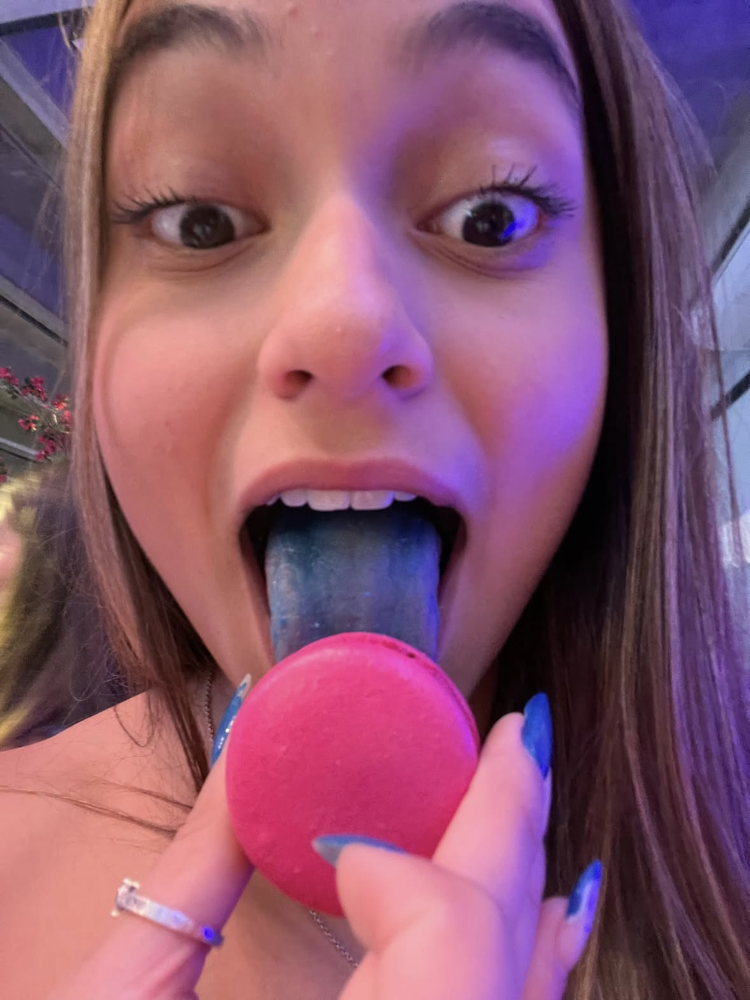

eu te amo.
Entre todos os lugares que eu poderia estar, ainda escolheria estar perto de você. Fiz esse pequeno espaço para guardar coisas que fazem parte da sua vida e lembrar, do meu jeito, o quanto você é especial.

Entre todos os lugares que eu poderia estar, ainda escolheria estar perto de você. Fiz esse pequeno espaço para guardar coisas que fazem parte da sua vida e lembrar, do meu jeito, o quanto você é especial.